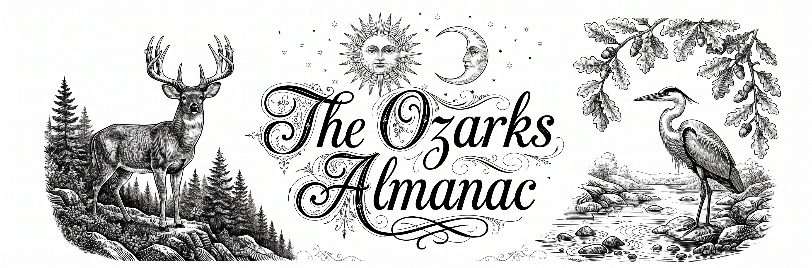

Zodiac & Somatic Influence
Garden & Field
Almanac Lore
Calculating...
Illumination:
--%
Sunrise
--:--
Sunset
--:--
Moonrise
--:--
Moonset
--:--
Length of Day:
--h --m
Major Period I
--:--
–
--:--
Major Period II
--:--
–
--:--
Minor Period I
--:--
–
--:--
Field & Stream Dispatch
Solunar Rating:
--
Traditional Weather Outlook